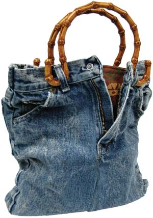
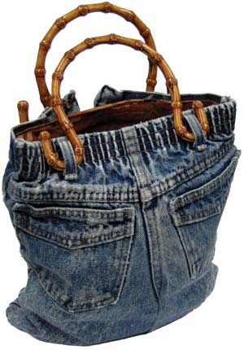

I have been making purses out of blue jeans my children have outgrown. I find that children’s size eight or smaller works best. I line the purses with a new bandanna, about 21 inches square, or other leftover material I have on hand. The handles are available at craft stores in a variety of styles and colors.
Make the purse: Depending on how long you want the purse to be, cut off the jeans legs somewhere below the crotch and above the knees (which probably have holes in them anyway). Cut off the inside-leg seam all the way up one leg and down the other leg. You want the inside edges of the two legs to be fairly parallel so you can sew them together to make a square bottom to the purse.
Turn the pants inside out and sew the two front leg pieces together and then the two back leg pieces together. Sew across the bottom of the legs to make a tube. Turn the jeans purse right side out.
Line the purse: Fold a bandanna or other similar-sized piece of material in half. As a guide, lay the jeans purse on top of the material. Cut the lining material about an inch wider than the purse on each side. Stitch the sides of the bandanna together to form a pouch. Fold over about a half-inch around the top of the bandanna pouch and iron it flat. Insert the bandanna-pouch lining into the purse and pin the folded top of the bandanna to the inside of the waistband. Stitch the bandanna to the waistband, but stop and restart the sewing each time you come to a belt loop, so that the handles, with their curved ends, can slip into the belt loops for carrying.
|
 CINDY LINDSAY You can make this easy purse out of old blue jeans. |
 CINDY LINDSAY You can make this easy purse out of old blue jeans. |
|